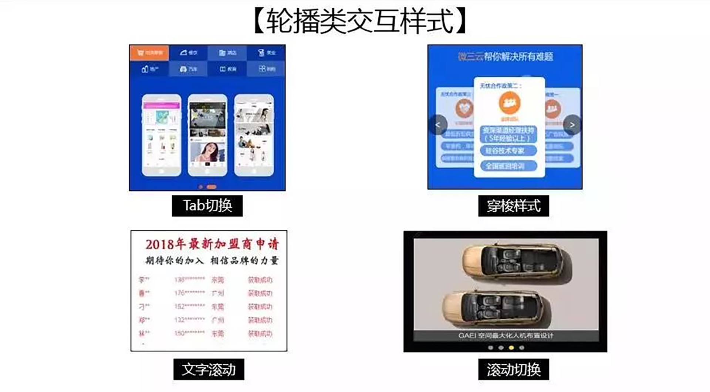

- 00 开篇词 作为一名互联网人，你为什么必须了解广告产品？.md.html
- 01 业务逻辑：广告产品的前世今生和商业模式是怎样的？.md.html
- 02 业务链条：广告主、媒体、第三方等分别如何看待广告产品？.md.html
- 03 头部玩家：从BAT到跳动的字节，广告产品有哪些变化与发展趋势？.md.html
- 04 产品体系：互联网大厂的广告产品存在哪些共性和区别？.md.html
- 05 变现模式：什么样的产品适合采用广告模式变现？.md.html
- 06 产品路线：大厂和小厂的广告产品发展路线有什么区别？.md.html
- 07 计价与效果（上）：如何制定合理的计价方式？.md.html
- 08 计价与效果（下）：如何制定合理的效果评估指标？.md.html
- 09 效果优化：如何一步步从提升曝光量深入到提升销量？.md.html
- 10 流量优化：如何兼顾广告收入和用户体验？.md.html
- 11 物料生产：如何满足广告主的创意需求？.md.html
- 12 精准定向：如何建立一个成熟的用户标签体系？.md.html
- 13 转化优化：互联网大厂如何利用算法优化广告效果？.md.html
- 14 程序化交易：程序化交易是否可以提升广告效果？.md.html
- 15 需求调研：广告产品潜在需求的调研流程是怎样的？.md.html
- 16 平台建设：如何从0到1建立一个完整的广告产品平台？.md.html
- 17 职业发展：新人入行，如何判断自己是否适合做广告产品？.md.html
- 18 团队建设：如何搭建一个高效的广告产品团队？.md.html
- 19 跨团队合作：产研团队和销售端、媒体端、市场端如何合作？.md.html
- 20 产品运营：不同发展阶段如何制定业务目标和运营策略？.md.html
- 21 广告产品彩蛋：课程答疑与推荐书目.md.html
- 结束语 你想要成为什么样的互联网广告产品人？.md.html
- 捐赠
09 效果优化：如何一步步从提升曝光量深入到提升销量？
你好，我是郭谊。
在前两讲中，我带你了解了广告产品计价和效果相关的一系列指标和它们之间的相互关系。这些知识不仅能够帮助你更好地理解广告产品，而且也是我们对广告产品进行效果优化的必学内容。今天我们将继续深化这个问题，进一步分析广告产品效果优化的策略。
广告产品的效果提升是业务执行层面的核心问题，它同时涉及了广告主和企业两方的利益，一方面能够满足广告主曝光和转化的需求，另一方面也能满足公司的商业收入需求。因此，效果优化要在这两者之间寻求一个平衡。
在这一讲中，我会带你一起分析如何使用具体的策略与手段，一步一步优化广告产品整个投放过程中涉及的各个指标，从而最终实现广告产品的效果优化。
首先，让我们来回顾一下我们学过的广告产品的收入公式：
广告产品的总收入 = 千次曝光单价*曝光量 / 1000- \= 广告主对于每次转化 / 购买的出价 * 预估转化率 * 预估点击率 * 曝光量
从这个公式中，我们可以看出，广告主对于每次转化/购买的出价，是由广告主的成本决定的，我们作为广告平台无法直接改变。但是其他几个指标：预估转化率、预估点击率、曝光量，是可以从产品端改进的。下面，我带你按照从曝光到点击再到转化的过程，来分析一下曝光量、点击率、转化率每一个指标的优化方式。
如何优化广告曝光量？
优化广告曝光量，你要分两步走。下面，我们就来展开看一下这两步具体应该怎么“走”。
步骤一：增加广告资源库存，提升曝光量上限
广告曝光量的天花板，取决于你的广告资源库存。广告资源库存指的是，某一个时间段内所有的广告产品都售卖并投放出去，一共包含的CPM数量。那么，我们可以通过哪些方法来增加广告资源库存呢？
- 增设广告位
增加广告资源库存的第一个方法，就是增加新的广告位。那么，我们应该怎么决定新开广告位的位置呢？
在第1讲中，我就为你介绍过PC互联网时代诞生的众多类型的广告。但是，今时不同往日，现在的广告产品主要出现比你的巴掌大不了多少的智能手机屏幕上。在这么小的空间里，开设新的广告位其实很有难度。我建议你在新开广告位时，优先选择用户原有操作流程中，可以自然插入广告位的环节。
什么位置能自然地插入广告位呢？让我们一起来看几个典型案例。
App开屏位置：我们生活中最常见的就是各种App开屏广告。用户打开一个App时，会先进入App的启动画面。在这个启动画面插入的广告叫做开屏广告。因为用户已经养成等待App启动画面播放的习惯，所以自然能接受开屏广告。-
搜索结果页面：就像我们之前说的搜索关键词广告，可以在搜索结果页面自然地插入广告位，比如手机淘宝直通车广告。在淘宝搜索商品后展示出来的搜索结果页，排在前面的商品的标注有“广告”字样的就是淘宝商家购买的直通车广告；没有标注广告字样的则是非广告的商品自然搜索结果。自然搜索结果一般会排在搜索关键词广告后面，而我们辨认广告的根本方法就是看有没有标注“广告”或者“推广”的字样。-
整个环节：整个环节都能增设广告位，最典型的比如美团推广通系列广告产品，广告位能出现在用户打开美团App或小程序到完成下单购买的整个环节中，能够给广告主带来全环节的曝光。但相比于前两个位置，能够在整个环节开设的广告位的平台较少，只有像美团、京东、淘宝等生活消费类App才有可能做到。
- 增设广告轮播数
增加广告资源库存的第二个方法，是在已有广告位上增加轮播数。
广告轮播是指媒体平台在同一个广告位设置投放多个广告。这些广告按照一定的规则进行轮流展示，如每隔一段固定时间就自动切换不同的广告物料，或在用户刷新页面后切换不同的广告物料。
例如手机淘宝App首页第一屏的竖高矩形，就是一个典型的四轮播。如果你停留在这个页面，它会每过3秒钟自动切换一次，每次给你展示不同的商品。如果你刷新当前页面，它还会为你继续更新其他商品展示。像不像一个炫酷的橱窗？当然，这种轮播位置不一定都是对外售卖的广告位，也可以放你们自己的运营素材。
轮播广告位和其他广告位一样，可以按照CPT、CPM合约购买，也可以把合约购买后当天剩余的流量加入CPC竞价购买。我们可以通过增加轮播数，把一个广告位变成n个广告位，不过，所有轮播的总曝光量理论上和分割之前是一样的。所以，一般来说，首屏等位置好、曝光量高、尺寸大的广告会优先考虑增加轮播数。因为这些广告位如果整轮售卖，价格会非常昂贵，而通过增加轮播数，让更多广告主可以参与CPT和CPM合约购买，可以提高广告位总价。
步骤二：提高广告占有率，提升实际曝光量
如果说增加广告资源库存相当于开店备货，那么货备好之后的第二步，就是要尽可能多地把你备好的货卖出去了。广告产品和其他的货还不一样，过时不候，不能像很多实体商品一样压库存。所以，你得想办法增加广告产品的“出货率”，这个指标叫做广告占有率。举个例子，假设某一个时间段的广告库存资源是100%，售出了一半，那么广告占有率就是50%。
增加广告占有率，最直接的手段就是增加广告主，也可以分两步走。
- 吸引重点行业的广告主
第一步，吸引重点行业的广告主。这需要我们对目标客户的行业有一定的预测，也就是客户画像，包括：客户行业、客户规模、典型客户等等，并且需要让销售或者代理公司联系一些典型客户进行产品推荐，再通过客户对产品的接受度以及购买和投放后的反馈，来判断和调整你的目标客户。
我在百度富媒体展示广告团队工作时就是这样做的，我们在产品设计时预设重点行业是预算高、广告曝光需求强、对媒体调性、广告位置和尺寸要求较高的品牌客户，所以我们优先联系了欧莱雅、宝马等品牌客户。在经过半年的广告产品推荐售卖和投放尝试后，我们根据产品反馈确定了汽车、快消、金融、3C数码四个首批重点行业。之后，针对这些重点行业，我们拓展了更多的同行业客户，快速提升了广告主数量。
- 拓展更多行业
引入重点行业的广告主以后，第二步就需要引入更多行业的广告主。不光是为了增加广告主数量，同时也是为了提升广告资源的均衡利用率。因为广告主行业单一，会造成争夺目标用户、广告时段和广告产品的局面，导致广告资源售卖不均衡。而引入多种类型的广告主，是改善这一矛盾的根本手段之一。
之前我在腾讯工作时，PC端腾讯QQ新闻弹窗上的富媒体广告，是当时最受欢迎的广告产品之一，常常处于紧缺状态。但我们分析广告投放数据时，却发现即使是这么热门的广告产品，也有很多没有售出的时段。大部分广告主都倾向于购买工作日的黄金时段，所以相对来说，其他时段广告占有率就较低。但游戏行业的广告主却不一样，他们喜欢挑选周末、寒暑假等非工作日的时段投放。所以基于数据分析，我们制定了面向游戏行业的促销政策，推动假日销售。
如何优化广告点击率？
在完成了广告曝光量的优化之后，你接下来要做的就是优化广告点击率。广告点击率的提升，不仅能直接提升广告点击量，让CPC按点击计价的广告产品获取更多收入，也会因此吸引更多按照CPM或者CPT购买的、有曝光类需求的广告主，因此优化广告点击率是广告产品发展早期到中期的一个重要工作。
那么，我们应该怎样优化广告点击率呢？
步骤一：引导广告客户，优化广告物料
广告物料，又常常叫做广告素材、广告创意，指的是在广告位上直接向用户展现的广告创意，是用户接触广告的第一步。
像BAT、字节跳动这样的广告平台，都会为广告主和代理公司提供广告物料规格表，内容包括物料的格式（文字、图片、图文、视频）、尺寸、大小等，一般还会提供demo示意。广告主或者代理公司，必须按照这些规格要求制作和提供物料，才能保证广告的正常上线和投放。
用户看到一个广告后，注意力停留的时间大概只有1-5秒。物料的好坏，直接影响到广告的点击率。那什么样的物料转化率比较高呢？
- 突出亮点
对于品牌力较强或者产品功能很容易被用户所理解的产品，突出亮点，例如品牌、价格。比如戴森吹风机的广告，它的品牌影响力非常强，在消费力较强的年轻女性用户群体中很受欢迎，产品外形的辨识度也很高。因此，在物料中，可以重点呈现品牌和产品形象。同时，这款广告正好推广的是一个促销活动，所以把降价300元的信息高亮显示。这样的物料无疑能够提升目标用户的广告点击率。
- 使用人物+场景的组合
有明确用户场景的广告使用人物+场景的组合，比单纯的产品展示更能提高点击率。因为人物的出现，容易让用户产生代入感，而人物+场景的组合，增强了故事性，激发了用户的好奇心，点击率自然也就上来了。你可以对比一下下面两张广告图片，加入了人物，突出了“小额借贷”这个用户场景，就比干巴巴的产品介绍更容易吸引用户点击。
- 使用和产品核心体验紧密相关的素材
品牌力不是很强的广告，还可以考虑使用和产品核心体验紧密相关的素材。这一点在游戏广告上应用很多，例如在物料中使用游戏中的场景截图，让用户提前感受产品，从而吸引用户下载和试用游戏。
- 借势营销
我们要尽可能地借势营销，引起用户好奇心，提高点击率。无论是奥运会、世界杯、双十一、车展，还是明星八卦、时事热点，都是制作广告物料时可借的东风。但是这种借势最好建立在产品卖点和热点事件的关联点上，不然点击率提升了，后续转化率也不会好。
- 保持风格统一
广告风格最好和承载媒体平台的风格相同，这样用户会更容易接受你的广告，尤其是对一些下沉的用户群体（例如城镇、年纪较大的用户），会有更高的点击率。
虽然广告物料是由广告主或代理公司负责制作的，但是我们也需要对物料优化的基本原则有所了解，这样才能从平台角度给客户更多有效的建议。
需要注意的是，广告物料在上线前必须经过严格的审核。因为一旦出现违规物料，就可能会引起有关部门的查处，所以大型媒体平台都会有专门的广告审核团队。
步骤二：优化用户标签体系，打造精准定向技术
除了物料之外，广告点击率还受到用户定向的影响。比如说，一款女性化妆品广告，投放给女性用户，点击率显然会比投放给男性用户高。所以，大型媒体平台都会建设自己的用户标签体系，供广告主或者代理公司做广告产品投放时选择，以圈定自己的目标用户群体。
用户标签体系涵盖的标签类型很多，包括用户人口学属性、用户行为属性、用户兴趣等，你可以看一下腾讯的广告数据标签体系。关于如何建设完善的用户标签体系，我会在第12讲“精准定向”中为你进行详细讲解。
这里，需要注意的是：精准定向技术虽然很重要，但投放时，最好不要选择过多的用户标签。因为太过狭窄的定向条件，很可能会导致广告投放量过少；投放量过少会导致广告效果数据波动得非常厉害，很难进行后续优化。而且，从媒体平台角度来说，也不利于你争取更多的广告主预算。所以，最好引导广告主投放的范围先宽泛些，后续再优化。
如何优化广告转化率？
转化事件是每个广告主自定义的，所以它有可能指App的激活、产品的下单率，也有可能是游戏的付费。所有的广告主最终追求的都是转化量和转化率。就算没有追踪用户从广告曝光到点击再到转化每一步的数据，广告主也会统计广告投放期间商品的转化情况，以便后续把更多预算给到广告转化率更高的媒体平台。
那么，我们应该怎样优化广告转化率呢？
步骤一：引导广告客户，优化广告着陆页
广告点击后跳转到着陆页（landing page）。移动手机端通用的着陆页分成三个部分：头图部分、主体部分、引导部分。设置头图的目的是吸引用户注意力，让用户沿着页面往下看；主体部分是为了引起用户对产品的兴趣，引导部分是用来引导用户采取行动的。
其中的主体部分，我们经常会使用各种类型的可交互表单，这种方式比较适合教育、婚纱摄影、房产家居、电商等等行业的广告主，这种方式能够引导用户在线测评以促进转化，或者填写表单以获取销售线索。除了交互式表单，我们还可以考虑在主体部分使用游戏性更强的可交互抽奖。这种设计利用了用户心理中对物质激励和概率事件的渴望，比较适合汽车、美妆、生活服务等奖品和促销活动丰富的行业广告主。
你还可以在主体部分运用轮播，让有限的空间可以呈现出更加丰富的信息。业务板块多、想要向用户全方位展现品牌及产品信息的各个行业的广告主都可以考虑使用轮播。

最后，你需要注意的是：因为手机屏幕宽度有限，如果产品单价较高，那就需要较多的信息，较长的引导过程，主体部分可以适当拉长到两屏甚至更多屏。但是首屏一定要进行特别的设计，才能让用户有下拉的欲望，最终完成有效转化。
广告主的行业和产品类型很丰富，因此，要快速提升着陆页设计能力，提升着陆页的广告转化率，最有效的方式就是多收集不同行业的优秀着陆页案例，从中找出适合各个行业的设计方案。
步骤二：通过A/B test，筛选高转化的广告投放计划
A/B test：又叫做“拆分对比测试”，在控制其他变量不变的情况下，对同一个变量进行拆分对比，观察变量拆分之后的情况，并采取合适的动作。
在广告投放中，这个变量可能是不同的广告位选择、不同的广告投放时间、不同的广告出价、不同的人群定向条件（不同的用户标签选择）、不同的广告物料，也可能是不同设计的着陆页。我们可以制定不同的广告投放计划，在投放时把预算分配到两条或者两条以上设置不同的广告中，实现A/B test。
大型的媒体平台可能会提供A/B test的现成工具。所以，你可以参考Facebook、BAT、字节等大厂已有的A/B test工具，快速设计出适合你的媒体平台的类似工具，帮助客户高效提升转化率。
步骤三：通过oCPM技术，让算法完成转化量和转化成本的最优配置
oCPM，还有oCPC/oCPA/oCPX等，其实本质上指同一种技术。所有的出价策略前加的单词“o”都是optimized的首字母，意思是“优化”，所以，加o的广告都可以叫做“按目标转化出价的CPM/CPC/CPA/CPX广告”。这种技术的实质是在媒体平台的广告产品计价方式不变的前提下，由系统按照广告主设定的转化成本期待进行自动优化，在较短的时间内达成广告主在当前出价下的最大转化量。
举例来说，某游戏广告主定义“用户激活”为转化事件，希望把安卓端用户激活成本控制在50元/个。那么，广告主可以选择应用oCPC技术，按照媒体平台提供的技术文档进行对接后，在投放时广告主依然按照CPC进行出价，但是同时设定激活成本期待为50元。广告投放开始后，系统会在几天之内自动帮助广告主初步找到CPC竞价范围以内，且转化激活成本在50元上下合理范围内的广告曝光量。
可以看出，和传统的CPC竞价比，oCPC至少具备以下两个明显的优势：
- 减少广告主和代理公司操作人员的手工调整出价次数，操作人员不必再频繁调整出价来寻找出价和量之间的平衡；
- 如果广告主的转化成本期待设定较为合理，可以在控制转化成本的前提下，从全局角度高效提升转化量——实际上，Facebook当初发明此项技术，初衷就是为了增加游戏广告的转化量。-

oCPM系列技术现在已经在广告投放中被广泛应用，取得了明显的效果。
重点回顾
在这一讲中，我带你分析了广告产品投放过程中，如何一步步提升曝光量、点击率、转化率等关键指标，从而达到广告效果各个环节上的优化提升。
首先我们可以通过增加广告资源库存和提高广告占有率两个方面，来提升广告曝光量，再进一步通过优化广告物料和通过用户标签体系实现精准定向广告两个方面，来提升广告点击率，最后我们可以通过优化着陆页、应用A/B test技术和oCPM系列技术，来提升广告转化率。
在整个效果优化过程中，我们要坚持先简单再复杂，先人工运营再系统优化的原则，先处理明面上的问题，再处理深层问题，由浅入深，层层递进，规划好产品迭代的节奏。关于流量、物料、定向、转化等各个方面，我会在后面4讲中继续带你学习如何加快产品化、系统化的进程。
实战演练
调动你发现“美”的眼睛，请搜集汽车、电子数码或电商等行业/产品的广告物料和着陆页优秀案例，并说明这些案例的成功点。
期待你的分享！也欢迎你把这节课分享给需要的朋友，我们下节课再见！
© 2019 - 2023 Liangliang Lee. Powered by gin and hexo-theme-book.